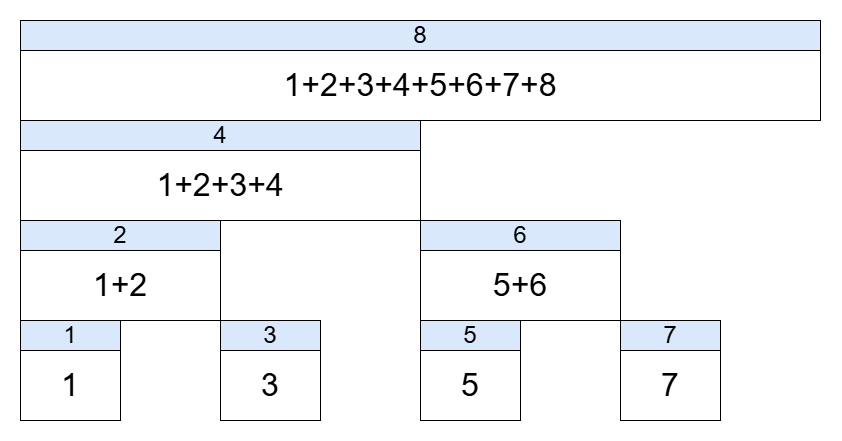

区間和の更新が高速に行える木構造について解説します。
参考：Qiita
BITはセグメント木の一種で、通常の配列と累積和配列がもつオーダーの遅い部分を補うための木構造で、更新も区間和の計算も $O(\log N)$ で実行することができます。
| 操作 | 通常の配列 | 累積和配列 | BIT |
|---|---|---|---|
| 更新 | O(1) → A[2] = 10 | O(N) → 再計算 | O(logN) |
| 区間和 | O(N) → sum(A[0:3]) | O(1) → ac[3]-ac[0] | O(logN) |
長さNの配列で実装できる点が特異であるといえます。
A = list(range(1,9))
print(A)
BIT = [0]*(8+1)
BIT[1]=1 # Aの 1番目の値
BIT[2]=1+2 # Aの 1,2番目の和
BIT[3]=3 # Aの 3番目の数
BIT[4]=1+2+3+4 # Aの 1,2,3,4番目の和
BIT[5]=5 # Aの 5番目の数
BIT[6]=5+6 # Aの 5,6番目の和
BIT[7]=7 # Aの 7番目の和
BIT[8]=1+2+3+4+5+6+7+8 # Aの 1,2,3,4,5,6,7,8番目の和
print(BIT)[1, 2, 3, 4, 5, 6, 7, 8]
[0, 1, 3, 3, 10, 5, 11, 7, 36]
A[3]〜A[7]の和を求めるには、通常と同じように、(A[0]〜A[7]の和) − (A[0]〜A[2]の和) を計算します。
ここでA[0]〜A[7]の和を求めるときに、ビット演算を用います。
7 = 111(2) について、右端の1を0にする操作を繰り返します。
111(2) → 110(2) → 100(2) → 000(2)
十進数では 7 → 6 → 4 → 0 です。
この値をインデックスとして足し合わせると、累積和を求めることができます。
ac7 = BIT[7] + BIT[6] + BIT[4] + BIT[0] #最悪O(log(n))
print(ac7)
#BIT[7]=7 BIT[6]=5+6 BIT[4] = 1+2+3+4 BIT[0]=028同様にA[0]〜A[2]について求めれば、A[3]〜A[7]の和を求めることができます。
ac2 = BIT[2] + BIT[0] # 10 -> 00
ac3_7 = ac7 - ac2
print(ac3_7)25区間和の計算に必要なオーダーは累積和の計算が2回で、高々 $O(\log N)$ であることがわかります。
A[5]に6を足す操作について考えましょう。
まず5を二進数で表すと、101(2) となります。
ここで右端の1に1を足す操作を繰り返し、N=8を超える前にやめます。
101(2) → 110(2) → 1000(2)
十進数では 5 → 6 → 8 です。
これらの値をインデックスとして6を足していくことで値の更新ができます。
#A[5]が入ってる要素が参照できる
BIT1 = BIT.copy() #BITの変更を防ぐ用
BIT1[5]+=6 # BIT[5] = 5 +6
BIT1[6]+=6 # BIT[6] = 5+6 +6
BIT1[8]+=6 # BIT[8] = 1+2+3+4+5+6+7+8 +6
print(BIT1)[0, 1, 3, 3, 10, 11, 17, 7, 42]要素の更新のオーダーも高々 $O(\log N)$ であることがわかります。
クラスを用いると以下のように実装することができます。
class BIT:
# 長さN+1の配列を初期化
def __init__(self, N):
self.size = N
self.bit = [0]*(N+1)
# i番目までの和を求める
def sum(self, i):
res = 0
while i > 0: # bit[0]=0なので計算しない
res += self.bit[i] # フェニック木のi番目の値を加算
i -= -i & i # 最も右にある1の桁を0にする
return res
# i番目の値にxを足して更新する
def add(self, i, x):
while i <= self.size: # iがNを超えないように制限
self.bit[i] += x # フェニック木のi番目にxを足して更新
i += -i & i # 最も右にある1の桁に1を足すAtCoder Library (ACL) にはBITのライブラリが存在します。
こちらは0-indexedで設計されているため、bit[0] から値を入れる必要があることに注意してください。
from atcoder.fenwicktree import FenwickTree
N = 8
bit = FenwickTree(N)
for i in range(N):
bit.add(i,i+1)
print(bit.sum(2,6+1)) # 前例の3~7
bit.add(4,6) # 前例の5番目に6を足す操作
print(bit.data)25
[1, 3, 3, 10, 11, 17, 7, 42]| 操作 | 操作内容 | 計算量 |
|---|---|---|
FenwickTree.add(i, x) | i 番目の要素に x を加算 | O(logN) |
FenwickTree.sum(l, r) | 区間和 [l, r) の計算 | O(logN) |
FenwickTree.data | 現在のBIT配列を返す | O(N) |